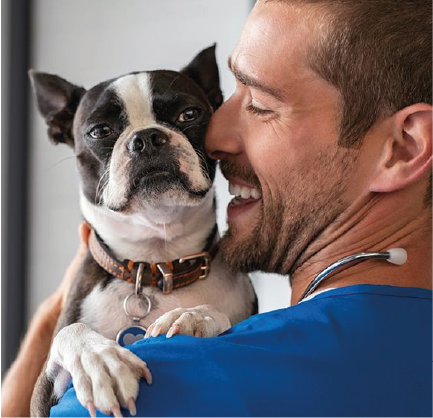
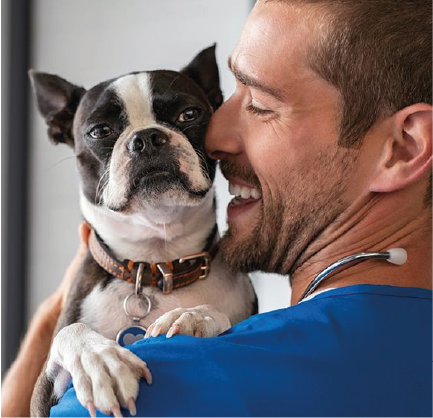

VETERINARIOS
Diagnostican, tratan y previenen enfermedades en los animales Nuestra entidad cuenta con muy buenos profesionales para su constante cuidado.
Diagnostican, tratan y previenen enfermedades en los animales Nuestra entidad cuenta con muy buenos profesionales para su constante cuidado.
 Nuestro equipo Tecnico se
emplean en asistir a los veterinarios mayormente en el cuidado y
tratamiento de cada uno de los animales ingresados a la clínica.
En PET CARE manejamos un equipo de Nutricionistas especializados
en animales los cuales Diseñan dietas y Planes Alimenticios para animales.
Del apoyo de nustros grandes
especialistas logramos verificar más rápido el estado de salud de cada animal
relizando análisis de muestras biológicas para diagnóstico.